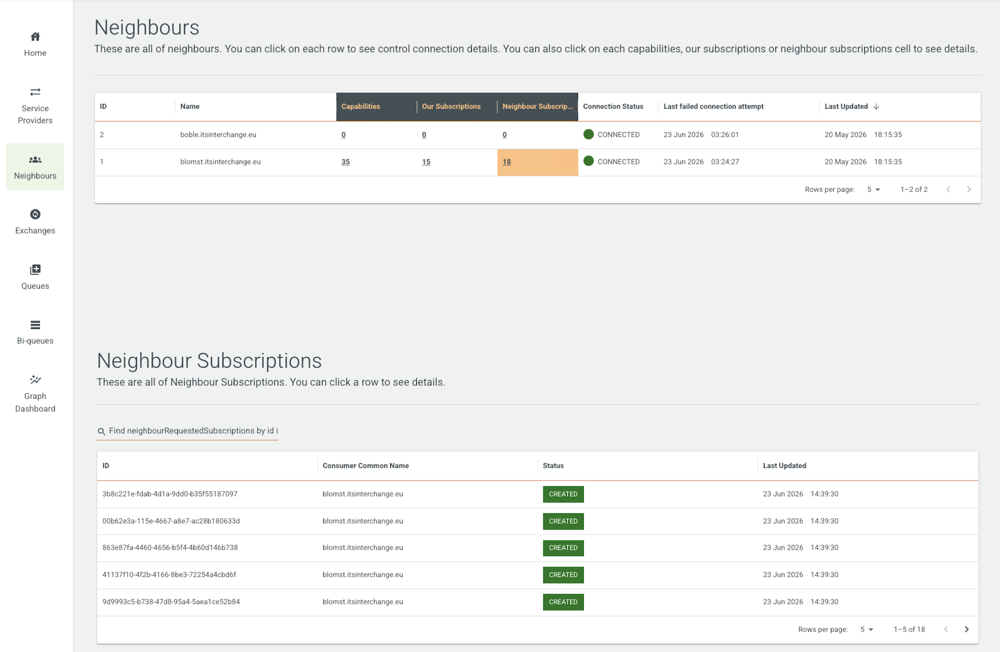

Frontends
Interchange portal
Interchange Portal is a self-help portal for interchange end-users to manage capabilities, subscriptions, deliveries and private channels. Here you can find the user guide on how to use portal user help
To run the interchange portal, see how to run demo/single-node in interchange project.
Admin frontend
Admin frontend is a systems administrator view of the system. It is currently view-only, and intended to aid an administrator to track down problems in the system, and provide enough information for the administrator to be able to remedy the problem.
The administrators can view list of service providers, neighbours, exchanges, queues, biqueues, and graphs. For example, this image shows the interface, where the admin can see the list of neighbours, their last connection status, last failed connection attempt and last updated timestamp. For each neighbour, you can see the number of corresponding capabilities, subscriptions, and neighbour subscriptions. You can click on each row to view the details.

Keycloak
Both Interchange portal and admin frontend are integrated with Keycloak configured with the required realm, users and roles. It is used to authenticate users and obtain access tokens for secure communication. An organization represents a customer organization and can be configured with its own access permissions, roles, and authentication methods. This enables different customer organizations to have separate authentication and authorization settings while sharing the same Keycloak deployment.